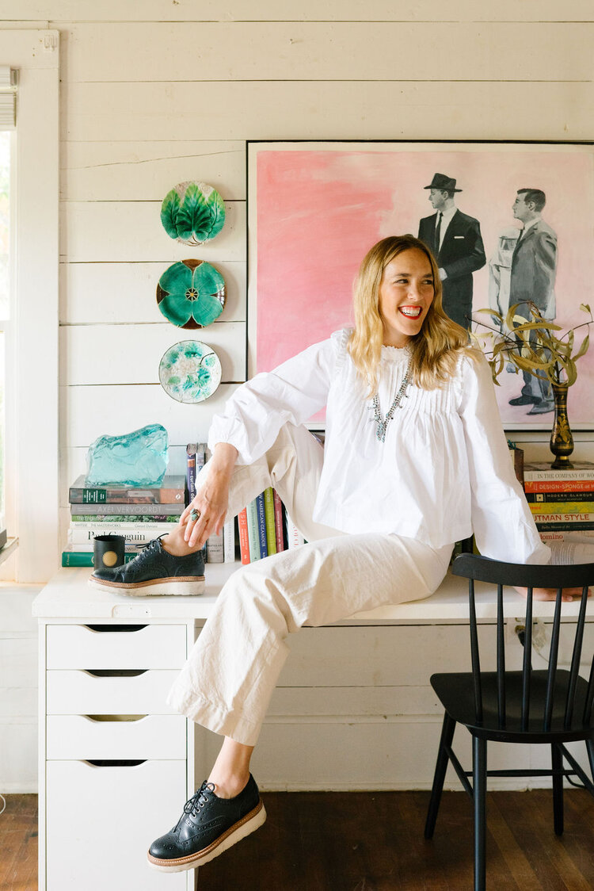
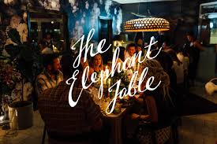

Interior Design
At Avery Cox Design, people in places is our game. We believe that the best spaces are truly individual and a reflection of you or your business. We strive to create thoughtful interiors that delight and inspire you on a daily basis, and we scour the globe to find you the most unique and beautiful pieces to enjoy for a life time. ACD values function, comfort, and beauty which we achieve through classic design practices and an artistic approach to composition. Beginning with research and inspiration, we move through the stages of design to find you the most efficient, functional, and elegant solution, while adhering to practical measures such as budget, accessibility, and timeline.
Interior Consulting
Don’t have a huge budget? No problem. For an hourly fee we will walk you through ideas, brainstorm solutions, or provide sourcing for specific problems such as layout, paint color, or where to find affordable art.
Styling
Pulling it all together is our specialty; from finding the perfect antique, to placing that blanket just so, to creating fantastic tablescapes. ACD can help make your product, home, or business look great for an event, photo shoot, or a visit from the Queen of England.
Ready to get started? Drop us a line.

With an eye for color and scale, Avery specializes in curating distinctive spaces, combining antique and modern elements of style in a way that’s at once contemporary and timeless.
That style is informed by the breadth and variety of her experience. Working alongside leading New York City decorators Amanda Nisbet and Jamie Drake, and designing for clients in, Maine, Martha's Vineyard, the Pacific Northwest, and Texas has resulted in a signature look--incorporating classic American craft, New York glamour, and vibrant Southwestern color--that provides clients with spaces that are functional, fresh and uniquely their own.
Avery earned a BFA in Interior Design from the University of Georgia, and cut her professional teeth on the fast paced, no nonsense, design industry in Manhattan. After great success in the city followed by a 5 year stint in Portland, ME, she moved back to her home state, and is quickly making her mark on the burgeoning city of Austin, Texas.
Contact us to learn about how we can help you craft the perfect space.
Feature — Three Colorful Bathroom Updates for an Austin, Texas Home
Article – Celebrating the States: The South (West of the Mississippi)
Article — Experts' Favorite Folding Chairs for Entertaining a Crowd
Article — How Ivy Designers Get Ready for the Holiday Season
Article — Austin Designers Pick Their Favorite Pieces: 3 Comfortable Lounge Ch...
Feature — You need to know about: Ornamental Habit
Feature — This Little House in Washington Has Mighty Big Ties to Nature

Feature — Avery Cox on Individuality, Longevity, and Sustainable Design
Feature — Avery Cox on Individuality, Longevity, and Sustainable Design
Award or Honor — Chicago Atheneum American Architecture Award 2017 – Little H...

Event Gallery – The Elephant Table Collab with Milo Waco and Avery Cox Design
Feature — From Floor Plans to Décor, a Focus on Design